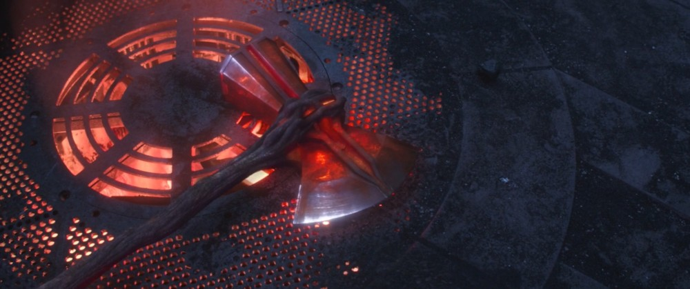
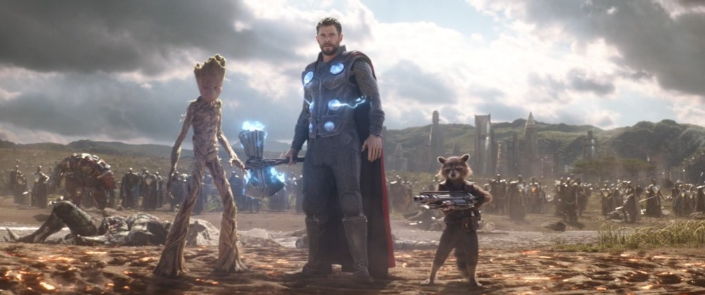
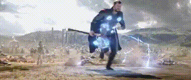
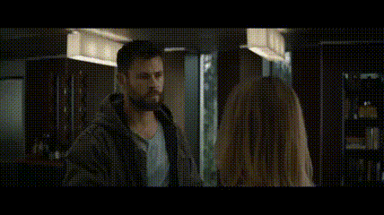

1. 개요
어벤져스: 인피니티 워부터 등장하는 토르의 새로운 무기.
앞에는 도끼날, 뒤에는 넓적한 망치머리가 달려 있으며, 이 도끼 머리가 그루트의 팔에서 잘라낸 나뭇가지로 이루어진 손잡이에 고정되어 있다. 그리고 위 이미지처럼 날에 번개가 이글거린다. 한손 망치인 묠니르, 그리고 원작의 모습과는 달리 양손으로 다루기 편한 길이이며 장신인 토르의 절반은 거뜬히 넘을 정도로 길이가 좀 있는 편이다.
인피니티워 극 초반 타노스에게 패배한 토르가 묠니르가 만들어진 니다벨리르를 찾아가 드워프의 유일한 생존자이자 드워프들의 왕인 에이트리의 도움을 받아 만들었다.
일단 이름은 스톰브레이커지만, 생김새는 원작의 스톰브레이커보다는 원작의 얼티밋 묠니르에 가깝게 생겼다.
2. 작중 행적
주의. 내용 누설이 있습니다.
이 틀 아래의 내용은 해당 문서가 설명하는 작품이나 인물 등에 대한 줄거리, 결말, 반전 요소 등을 직·간접적으로 포함하고 있습니다. 내용 누설을 원하지 않으면 이 문서의 열람을 중단해 주십시오.
2.1. 어벤져스 : 인피니티 워
타노스에게 처참하게 당한 후 친구, 동생 그리고 백성의 반을 잃고 그 원한에 이를 갈던 토르가 로켓, 그루트와 같이 니다벨리르로 가서 그곳의 유일한 생존자인 에이트리에게 타노스를 상대할[1] 새 무기를 제작해 달라고 요청하여 니다벨리르에서 제조된 최신 병기. 손을 잃은 에이트리에게 제작 지식은 머리에 들어있지 않느냐고 설득한 끝에 제작할 수 있었다.
다만 만드는 과정에서 토르가 중상을 입어 죽어가고, 자루가 없이 망치머리와 날 부분만 만들어져 떨어진 상태였다. 에이트리가 도끼자루를 다급히 찾자 그루트가 자신의 팔로 망치머리와 도끼날의 뒷부분을 합쳐서 감싼 뒤 절단해[2] 스톰브레이커를 완성했다.[3] 이후 스톰브레이커의 힘으로 회복한 토르가 비프로스트를 작동하여 와칸다로 내려오고, 영웅들과 와칸다 군대와 대적 중이던 아웃라이더들을 처치하여 전세를 180도로 뒤집어 놓는다.
2.2. 어벤져스 : 엔드게임
3. 능력


우주를 배경으로 하는 가디언즈 오브 갤럭시의 로켓조차 전설 취급하던 장소인 니다벨리르에서 제조된 무기로서, 작중 인피니티 건틀렛을 만들어낸 제작자가 직접 그에 대항할 무기로써 만들어낸 새로운 아스가르드의 왕의 새로운 무기이자 상징.
첫 등장 작품인 어벤져스: 인피니티 워에선 코믹스에서도 등장했고 묠니르의 특징이기도 한 자격이 있는 사람(고결한 자)만 들 수 있는 점 등은 보여주지 않았고, 아래와 같이 엄청난 에너지를 방출하는 면모 위주로 그 능력이 부각되었다. 고결한 자만 들 수 있는 것은 오딘이 묠니르에 마법을 걸었기에 가능한 거고, 이젠 오딘이 없으니 스톰브레이커에는 그런 제약이 없을 가능성이 높다.[4][5]
그 위력은 묠니르는 물론이고 오딘의 무기이던 궁니르를 명확히 능가하는데, 박지훈에 의해 또다시 누락된 부분이지만 에이트리가 "왕의 무기야. 아스가르드에서 가장 위대한 무기가 될 예정이었지. (King's weapon. Meant to be the greatest in Asgard.)"라고 언급한 걸 통해 알 수 있다. 로켓은 스톰브레이커란 이름을 처음 듣고서는 너무 거창한 거 아니냐고 했지만, 충분히 닉값을 하는 무기였다.
- 주인과 공명
작중에서 빈사상태에 빠진 토르를 보고 이 스톰브레이커가 완성되면 회복하게 할 수 있다는 언급과 완성 직후 토르의 손과 무기 자체에서 번개가 튀기며 허공에 떠오르는 등, 주인인 토르의 능력과 연결되어 있음이 묘사된다.[6] 토르 1편에서 디스트로이어에게 거의 죽을 뻔한 토르(이 때 토르는 오딘에 의해 신의 힘을 잃었다)가 날아오는 묠니르를 들자마자 본래 신의 모습으로 돌아와 말끔히 회복된 것과 비슷하다.
-
번개 마법 증폭
주인의 능력과 연결되어 있는 것의 연장선상으로, 묠니르와 비슷하지만 묠니르가 라그나로크에서 파괴됨으로써 그에 의존하던 토르가 스스로의 잠재력을 각성하게 되는 계기로써 사용되어 그 위상이 바랜 것에 비해 스톰브레이커는 타노스에게 패배한 토르가 그를 쓰러뜨리기 위해서는 무기가 필요하다고 여기고 새로 손에 넣은 정말로 치명적인 무기로, 작중에서 타노스에게 맞설 수 있는 무기로 여러 번 언급되며 완성된 인피니티 건틀릿의 광선 공격을 뚫고[7][8] 도끼가 흉부에 날아가 꽃히며 타노스에게 치명상을 입히기도 했다. 완다의 염력은 타노스의 움직임을 조금 느리게 만들었을 뿐 전혀 막지 못했다는 걸 생각하면 토르의 번개만 해도 엄청나게 강력하다는 걸 알 수 있는데[9] 여기에 스톰브레이커의 위력까지 합치니 막을 수가 없게 된 것. 한마디로 컨트롤러였던 묠니르와 반대로 스톰브레이커는 증폭기에 해당한다고 볼 수 있다.
-
비프로스트 소환
제작하는데 인피니티 스톤인 테서랙트급의 에너지를 필요로 하고 개인이 사용하려면 오딘이나 헤임달도 상당한 에너지를 필요로 하거나 전력을 다해야 하는 비프로스트를 자체 기능으로 소환 할 수 있는 능력도 보유하고 있다. 이를 증명하는 것이 비프로스트가 소환되면 소환 자리에 특유의 소환 문양이 남는데 와칸다에 토르가 도착하자 똑같은 비프로스트 소환 문양이 바닥에 새겨져있다. 다만 아스가르드에 설치된 비프로스트 구조물처럼 행성 파괴가 가능한지는 불명.[10][11]
-
회수

묠니르와 마찬가지로 주인의 손으로 돌아오는 기능이 있다.
4. 개연성 논란
개봉 후 일각에서 토르가 각성했는데도 새로운 무기를 찾는다는 점에 개연성이 부족하다는 의견이 나왔다. 그런데 인피니티 워 번역 논란을 기점으로 번역가 박지훈의 여러 오역들을 파헤치는 과정에서 라그나로크에서 '(헬라의 힘은) 아스가르드로부터 나온다. (토르) 너처럼.'이라는 대사가 누락됐다는 것이 밝혀지면서 일부에선 이에 아스가르드가 파괴되어 토르가 힘을 잃어서 스톰브레이커를 만드려고 한 것이 아니냐는 추측을 제기하기도 했다.
사실 아스가르드의 힘을 받는 왕족은 시간이 지날수록 점점 더 강해지는 것은 맞으나 아스가르드가 파괴되면 그 힘을 몽땅 잃는다고 하는 것보다는 더 이상 아스가르드에서 힘을 받을 수 없게되므로 힘의 성장이 멈춘다고 보는 것이 더 타당하다. 애초에 아스가르드가 파괴되어 힘을 잃었다는게 정설이었다면 스톰브레이커 제작을 시도조차 할 수 없었을 것이고 라그나로크에서의 주제의식에도 흠이 간다. 아스가르드는 땅이 아니라 백성이라는 오딘의 격려가 토르가 다시 일어서는데 큰 힘을 주었는데 아스가르드 토지가 사라졌다고 해서 백성을 지키기위해 일어섰던 토르가 다시 힘을 잃고 주저 앉는다면 그게 무슨 한심한 꼴일까. 라그나로크에서의 주제는 '묠니르가 없으면 자신은 아무런 힘도 낼 수 없다고 생각하던 토르가 자신의 내면에 잠재되있던 신의 힘을 깨닫고 각성해 진정한 왕으로 거듭하는 이야기'지 무조건 무기를 배척하는 주먹전사가 되는 이야기가 아니다.
헬라에게 처절하게 밀려 절망에 빠져있던 토르가 환상에서 오딘과 나눈 대화[12]에도 알 수 있듯이, 토르는 자신의 힘이 묠니르에서 나온다고 믿고 있었고, 그런 묠니르가 파괴되자 이 상태로는 헬라에게 대적할 수 없다고 좌절하고 있었다. 그 말을 들은 오딘은 묠니르는 미숙한 토르가 본인의 힘을 제대로 통제할 수 있도록 도와주는 도구였을 뿐이고 그의 힘의 원천은 다른 곳에 있음을 알려주고, 그제야 묠니르에 대한 의존을 극복할 수 있게 된 토르는 묠니르 없이도 천둥과 번개를 불러 일으키는 진정한 신으로 각성한 것이다.
간단히 말하자면 묠니르는 토르의 힘의 한계를 좀 더 낮게 잡아두는 대신[13] 그 힘을 다스리기 쉽게 도와주는 안정장치였고 묠니르 없이도 그 힘을 자유자재로 다스리는게 라그나로크 스토리를 거친 끝에 가능해졌다. 그리고 스톰브레이커는 이에 한발짝 더 나아가 완전해진 토르의 무력을 한단계 더 끌어올려주는 신기로서의 상징이 있다고 할 수 있는 것이다.
VOD에서 토르가 스톰 브레이커를 만든건 타노스의 인피니티 건틀릿에 대항하기 위해서였다고 제작진이 밝혔다. 결국 각성한 토르도 인피니티 건틀릿을 사용하는 타노스에게 대항하기엔 역부족이었고 타노스와의 격차를 메우기 위한 비장의 카드로 스톰브레이커를 제작하게 된 것이라 할 수 있다.
5. 기타
-
원작의 묠니르는 자격을 갖춘 자에게 천둥의 신 토르의 역할과 힘, 권능을 부여해주는 신급 아이템[14]으로 나오지만 MCU에서는 그 위력과 쓰임새가 크게 너프를 먹은 편이다. 스톰브레이커 역시 원작에서 베타 레이 빌이 사용하던 때에 비해 MCU 스케일에 맞게 묘사와 위력은 축소되었지만 반면에 작중 대우는 묠니르보다 훨씬 낫다.
-
사춘기 그루트의 팔로 자루를 만들었다. 얼핏 자루가 그냥 나무인 그루트의 팔이라서 약해 보인다는 의견도 있는데 그렇지 않다. 가디언즈 오브 갤럭시에서 가모라가 지니고 다니던 칼로 다 자란 성체 그루트의 팔을 쉽게 잘라낸 걸 가지고 견고함이 떨어질 것 같아 보인다고 하는데, 사실 가모라의 신체능력을 생각해보면 간단히 잘라냈다고 일반 나무랑 동급 취급할 정도는 아니다.[15] 오히려 가오갤 작중에서 보면 적을 줄줄이 꿰어서 사방팔방으로 내려치는 데도 멀쩡했고 로난의 기함이 떨어질 때에도 비록 본인은 산산조각 났지만 다른 멤버들을 보호할 정도로 충격을 버텨낸 거 보면 어느정도의 내구력은 있는걸로 보인다. 게다가 별의 심장으로 만든 날이 자루와 결합하면서 완성되는 작중 묘사를 보면 날부분처럼 자루에도 스톰브레이커의 힘이 흐르는 듯하니 보통 나무처럼 휘두른다고 부러질 일은 없다고 봐야 한다.[16]
-
작중 토르의 언급에 따르면 가오갤 멤버들은[19] 스톰브레이커, 혹은 니다벨리르제 무기를 들지도 못하고 들더라도 정신도 못 차릴 것이라는 언급이 나온다. 피터나 로켓, 맨티스 정도야 그렇다 쳐도 확실히 초인급이라 할 수 있는 드랙스, 가모라조차도 감당할 수 없다고 말하는 것을 보면[20] 확실히 강한 위력을 가진 만큼 인피니티 스톤처럼 패널티가 존재하는 듯. 스톰브레이커가 부여하는 막대한 권능을 생각하면 납득이 가는 부분이다.
-
"자격 있는 자(worthy)"외에는 들 수 없던 묠니르와는 달리, 스톰브레이커는 딱히 그런 제약은 없다.[21] 묠니르의 "자격 있는 자(worthy)" 제약은 토르 1편에서 오딘이 따로 부여한 마법에 따른 것이기 때문. 다만 실제로 그런 마법을 따로 부여했다 한들 상대할 적이 적이다 보니 큰 차이는 없었을 것이다. 당장 알그림만 하더라도 날아오는 묠니르를 쳐낸 적도 있고 헬라는 아예 잡아서 부숴버렸다. 즉, 제약이 걸린 묠니르부터가 충분히 강한 자들은 쳐내거나 잡을 수 있는 무기이다. 반대로, 묠니르는 제약 때문에 아무나 들 수 없을 뿐 일반인이 잡는다고 피해를 입는 것은 전혀 없지만, 스톰브레이커는 어지간한 강자가 아니고서는 잡는 순간 미쳐버리거나 죽을 수도 있는 모양.[22]
-
원전 북유럽 신화처럼 고대 노르드어 이름을 가진 아스가르드의 무기들과 달리[23] 살짝 뜬금없이 스톰브레이커라는 영어로 된 이름을 사용했다.[24] 참고로 원작에서 토르가 사용한 도끼의 이름은 야른뵤른(járnbjörn), 역시 고대 노르드어로 강철(járn) 곰(björn)이란 뜻이다.[25]